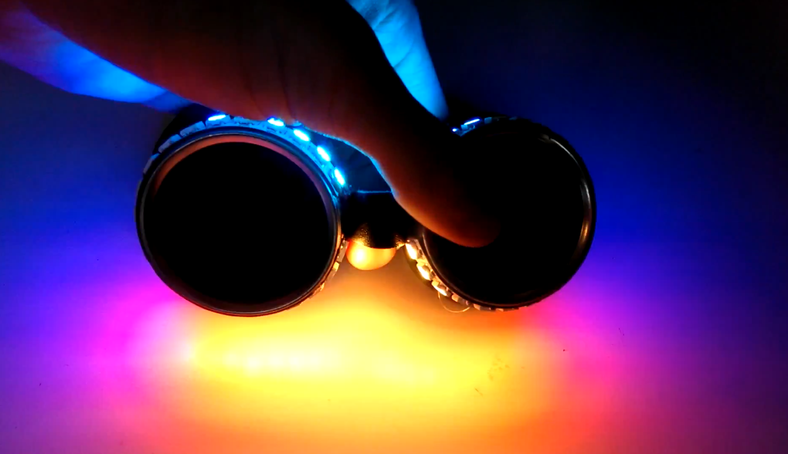
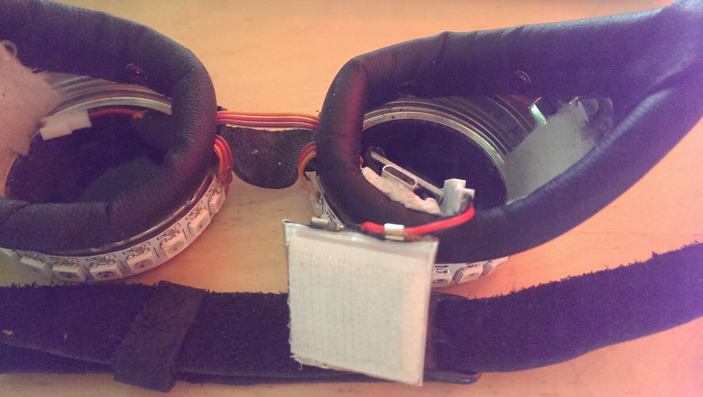

WS2812 Welding Goggles
Sun 11 October 2015
The goggles were built using an AtTiny85 module and a WS2812B strip and some bits and bobs that were laying around. A more complete BOM can be found below.
Code
git clone https://github.com/robertfoss/digispark_ws2812_waves.git
The animation is built ontop of the excellent light_ws2812 library. It supports the AtTiny85 better than other competing libraries like FastLED.
The animation is built around an non-float sin function and a HSV function that generates the actual colors.
Video
Bill of materials
- 6€ Weldorado STROOF DIN4 Welding Goggles
- 2$ Digispark
- 23$ WS2812B Strip 144 LEDs/m - Only about a 5th of the length needed.
- 2x$4 LiPo 3.7V 300mAh
- $3 LiPo USB Charger
- $6 Battery connector cable - Only a few will be needed.
- $4 Rainbow cable - Any cable would do, but this keeps the cables bunched.
- $3 Black 20mm veclro - Only a small part will be needed for attaching to batteries and the inside of the goggles.
Things to keep in mind when ordering these parts are that Weldorado won't accept an order for a single pair of goggles. You will have to order 3-4 pairs. And additionally pay a decent chunk of change for the shipping. So the more goggles you can find a use for the cheaper it will get. They are very nice looking though. Especially the rubber ones. A thing to note about the goggles is that the headstrap that ships with them is failry useless and probably should be replaced.
Another thing to be aware of is the fact that all orders from AliExpress will take at least 30 days to arrive to your door. Sometimes more.
Hardware construction

You'll have to excuse the lack of a proper schematic, but this has been a fairly organic project.
The connectors of for the batteries (B_VCC and B_GND), both WS2812B strips (LED_VCC, LED_GND and LED_DATA) and the digispark (DIG_5V, DIG_GND and DIG_PIN0) are soldered as follows:
- B_VCC + LED_VCC + DIG_5V
- B_GND + LED_GND + DIG_GND
- LED_DATA + DIG_PIN0
Issues and TODOs
- There is complete lack of an off-switch, and plugging and unplugging the battery is slightly messy. Especially in the unlit situations where these goggles would be fun to wear.
- The brightness is static and can only be changed by reflashing the AtTiny85. A potentiometer or button that toggles between different intensities (and possibly an OFF of sleep mode) would be very useful.
- The current head strap is made out of leather and is slightly hard to put on yourself.
- The glass is black which does make it very hard to see when it's dark. Since that is when the goggles are most fun to use, maybe the glass should be replaced.